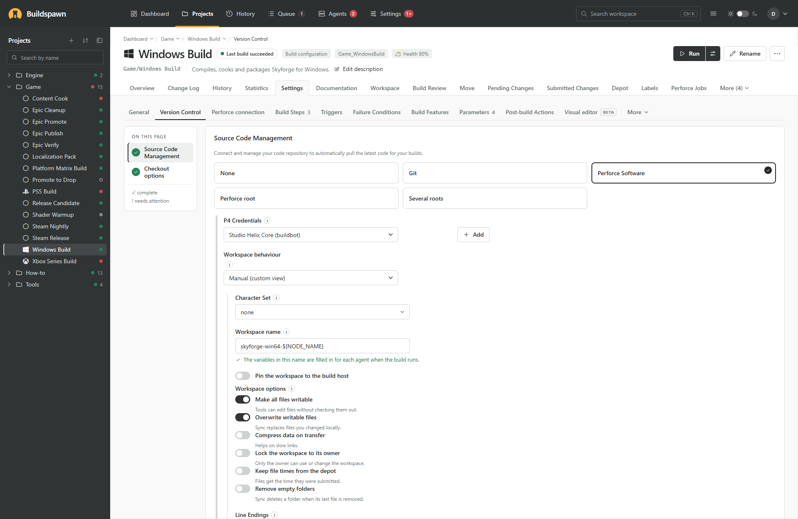
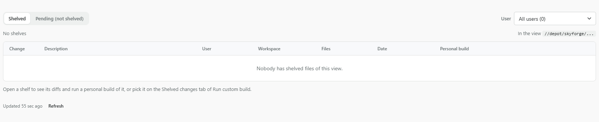

Perforce
Build from Perforce depots, streams and shelves, and browse changes, shelves and reviews without leaving Buildspawn.
When to use it
Perforce (Helix Core) support is built in. Use it when your game lives in a Perforce depot. A build configuration with Perforce syncs a workspace on the agent, lists the changelists since the last build, and gets extra tabs for shelves, pending changes, the depot and reviews. This page is the map: each part has its own page.
How to set it up
- Add a connection: the server, the user and a password or ticket.
- Define a Perforce root once, on the project. Choose a stream or write View Mappings.
- Open the build configuration, go to Settings › Version Control, choose Perforce root and pick the root. (For a workspace that only one build configuration uses, choose Perforce Software.)
- Add a trigger so a submit starts a build.
- Click Save.

Put ${NODE_NAME} in the workspace name so each agent gets its own workspace. Two agents must never share one.
The parts
Connections
Password and ticket credentials, SSL trust, administrator connections.
Perforce roots
Shared connection and workspace, every field, checkout rules.
Perforce Software
Workspace types, populate options and polling filters.
View Mappings
The table editor, quick add and preview.
Streams
One stream or many feature branches.
Shelves and personal builds
Test a shelf before submit; Swarm reviews.
Polling and triggers
Poll, Perforce trigger, refresh interval.
Perforce variables
P4_PORT, P4_USER, P4_CLIENT, P4_TICKET and the changelist in the build name.
Perforce operations
Build step: sync, clean, submit, copy and more.
Perforce root: unshelve
Build step for roots.
Perforce: Unshelve
Build step for Perforce Software.
Several roots
Perforce and Git in one build.
The workbench pages
A build configuration with Perforce gets tabs to work with the depot from the browser. Some are under More.

| Tab | What it shows |
|---|---|
| Change Log and Submitted changes | Submitted changelists with their files and diffs, and the first build that contains each one. |
| Pending Changes | Changelists people are still working on. Mine shows only yours. |
| Shelves | Shelved changelists, ready to build, filtered by user. |
| Depot | A depot browser: folders, file history, compare, diff, annotate, time-lapse, the revision graph, labels and branches. |
| Labels | Perforce labels, and branches. |
| Perforce Jobs | Perforce jobs and the changelists linked to them. |
| Build Review | Start a build for a Swarm review. |
| Perforce connection | The server and user in use, with a connection check. |
These pages open at once. Their Perforce data fills in a moment later with a spinner. Lists are kept and refreshed in the background, so they show Updated N ago with a Refresh button. If the server cannot be reached, you get a message with Retry instead of a page that hangs.
Run a build at a revision, or from an empty workspace
- In the Run dialog, a revision tab builds at a chosen changelist or label. The build page says which one it was built at. Latest syncs to the newest changelist, as a regular build does.
- The build configuration action to enforce a clean checkout makes the next build start with an empty workspace and check everything out again.
More Perforce features
- VCS labeling (a build feature, Label in Perforce): creates an automatic Perforce label on what the build synced. You set the label name (variables work), a description, whether an existing label may be moved, which branches are labelled (
+:name/-:name,<default>is the root's own stream), the root to label when there are several, and who gets an email if labeling fails. A failure shows a warning and does not change the build result. Personal builds are not labelled. - Workspace cleanup: remove the workspace after each build, remove inactive workspaces, or delete workspaces with a preview. Workspaces of deleted build configurations are removed for you.
- Problems outside the build, such as a wrong password, show on the build configuration page and in its settings.
- Changelist in the build name: see Perforce variables.
A worked example
The Skyforge studio keeps the game in Perforce on stream //skyforge/main. An administrator adds the buildbot credential, then a root Skyforge Main on the Game project with Auto Clean sync. Windows Build and Linux Server Build use the root, and a shelve trigger tests shelves marked #buildspawn.
What you see when it runs
- The log starts with the sync into the workspace named after the agent.
- The build page shows the changelist. Changes lists the changelists since the last build.
- The build configuration gets the tabs above.
Problems and fixes
| You see | What to do |
|---|---|
| Password or ticket error | Update the credential. See Perforce connections. |
| Two agents share one workspace | Put ${NODE_NAME} in the workspace name. |
| Tabs say the server cannot be reached | Click Retry, and check the connection on the Perforce connection tab. |